Research
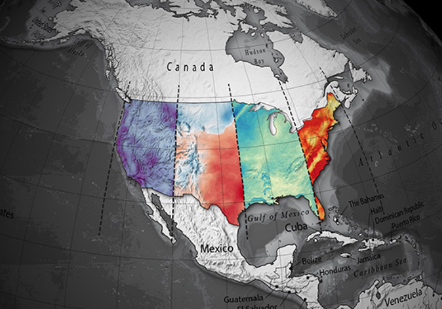
Super Resolution for Renewable Energy Resource Data (Sup3r): Generative machine learning based downscaling of meteorological data with 300x speed up over dynamical downscaling.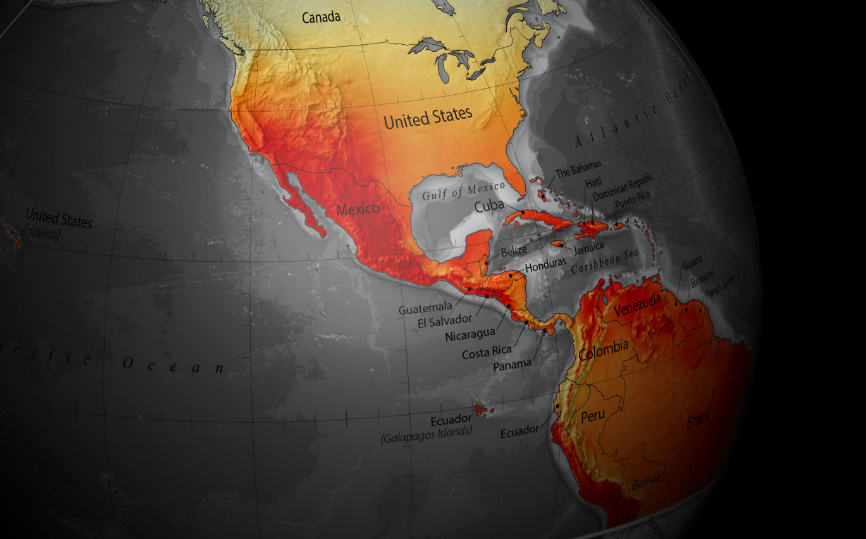
National Solar Radiation Database (NSRDB): Physics-based radiation transport with machine learning based cloud property prediction.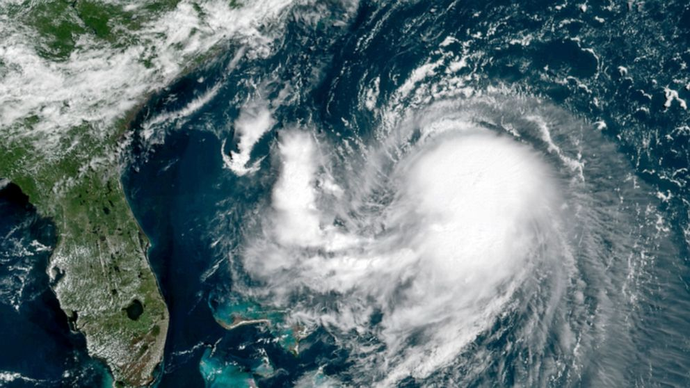
Hurricane AI: Developing tools for detecting hurricane conditions in satellite images. Click the link above for more details.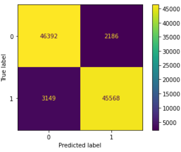
Toxic Message Classification: Developed a Twitch bot to filter offensive content in channels. Bot trained on chat data classified based on messages being timed out or not. Bot achieved 98% success rate and is currently in use on a Twitch channel.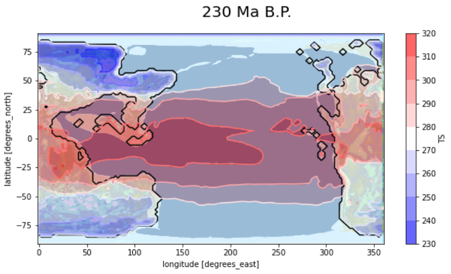
Climate Modeling: Developing an AWS interface to allow the general public to perform climate simulations. Successfully ported CESM and ISCA to AWS and developed tools for paleoclimate simulations.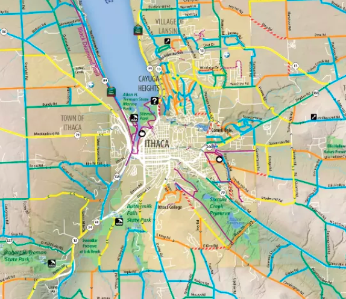
Road Conditions Prediction: Developing and planning a hyperlocal weather forecasting system designed to improve winter-storm emergency response and enhance natural disaster coordination for New York state's rural communities.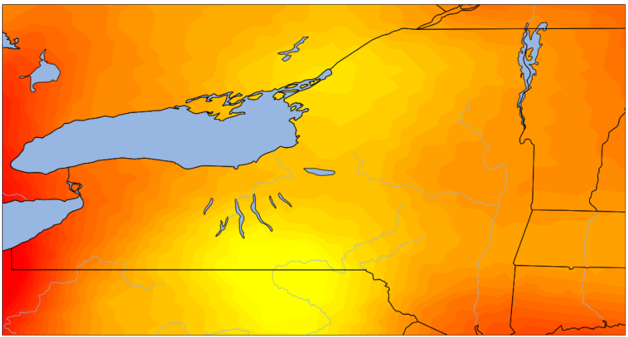
Weather Forecasting: Developed python code to setup WRF on AWS and a post-processing environment on Amazon Workspace. Led team of undergraduate students using this code to perform on-demand weather forecasting for Tompkins County.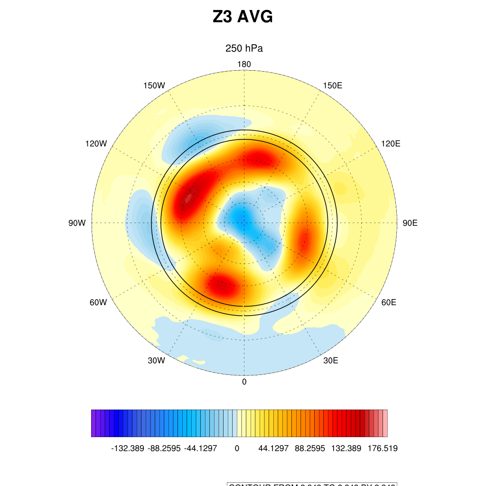
Idealized Planet Simulations: Led research on the effect of heat anomalies injected into aquaplanet SSTs and drycore surface anomalies on the polar vortex.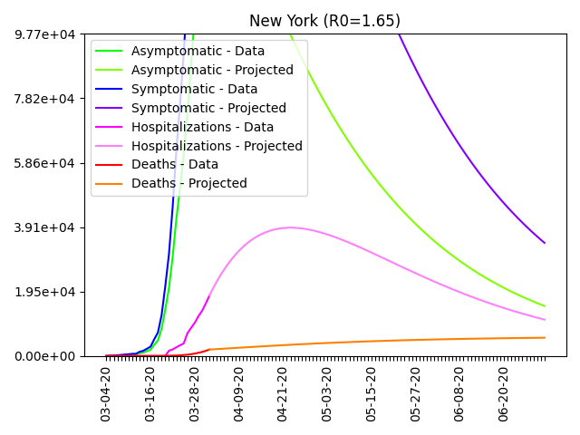
COVID Modeling: Built custom compartmental infectious disease model including asymptomatic, symptomatic, hospitalization, and death projections for the entire United States.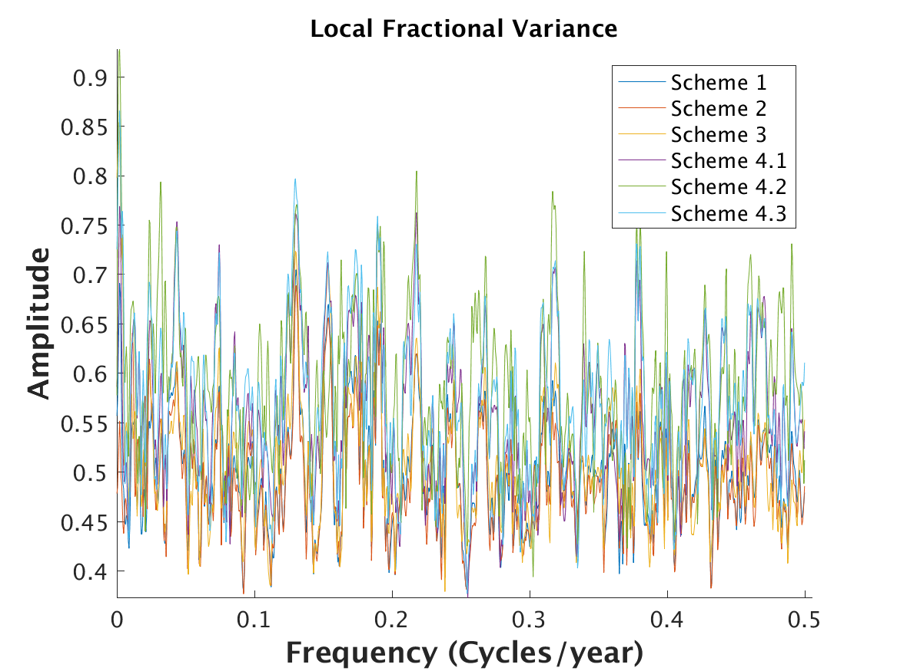
Low Frequency Climate Variability in Tree Rings: Updated and improved a complex database of tree ring information from a variety of disparate, obscure, and hard-to-access data sources.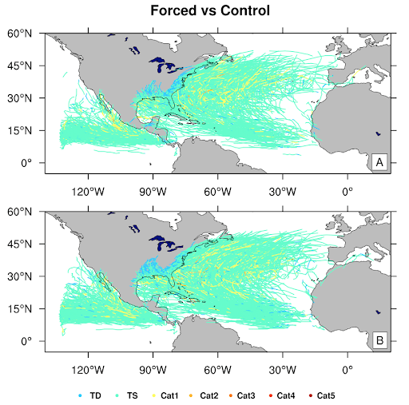
Effect of Volcanic Eruptions on Hurricanes: Analyzed the effect of volcanic eruptions on hurricane intensity, life span, and frequency through 1,000 years of regional climate simulations.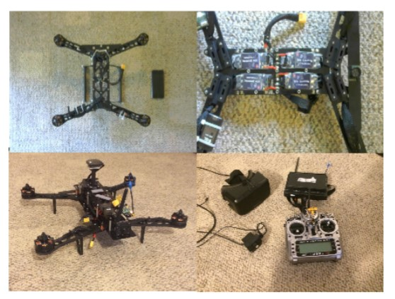
Immersive Telepresence with Aerial Vehicles: Wrote a proposal to develop a systems solution for immersive real-time viewing while flying miniature aerial vehicles. The prototype aerial vehicle was built from scratch.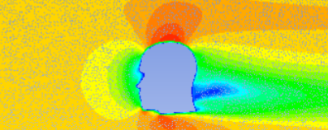
Aerodynamic Sound from Head-related Turbulence: Constructed a model for sound resulting from wind flow around a human head through precomputed fluid dynamics and runtime synthesis of stored sound textures.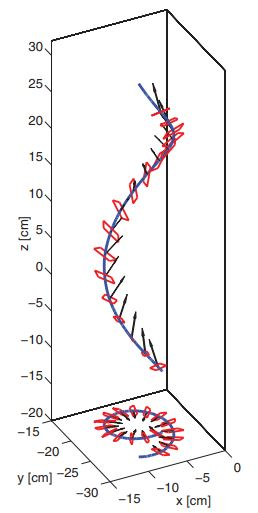
Aerodynamics of Falling Maple Seeds: Numerically simulated motion of falling airfoils geometrically similar to maple seeds using experiment recordings and image processing.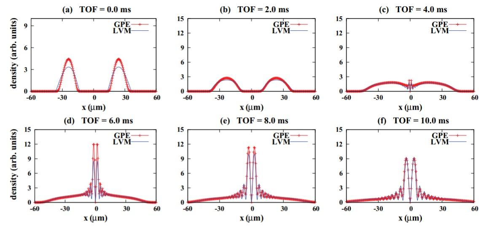
Expansion of Ring Bose-Einstein Condensates: Analytical modelling of condensate expansion after release from a ring trap. Results were published in Physical Review E.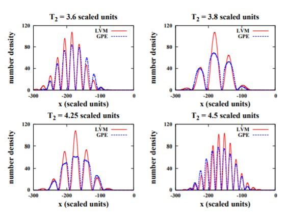
Prototyping Bragg-type Atom Interferometers: Developed an approximate analytical solution for Bose-Einstein condensate behavior after differently timed Bragg pulses. Published in Physical Review A.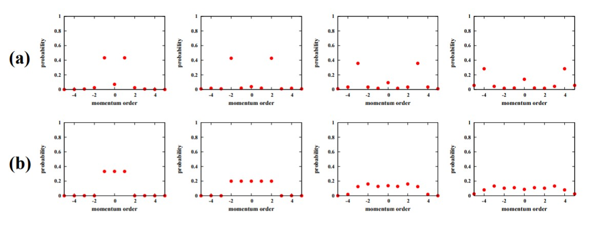
Engineering Bose-Einstein Condensate Momentum Distributions: Analytical treatment of condensates following applied standing-wave pulses, published in Physical Review A.